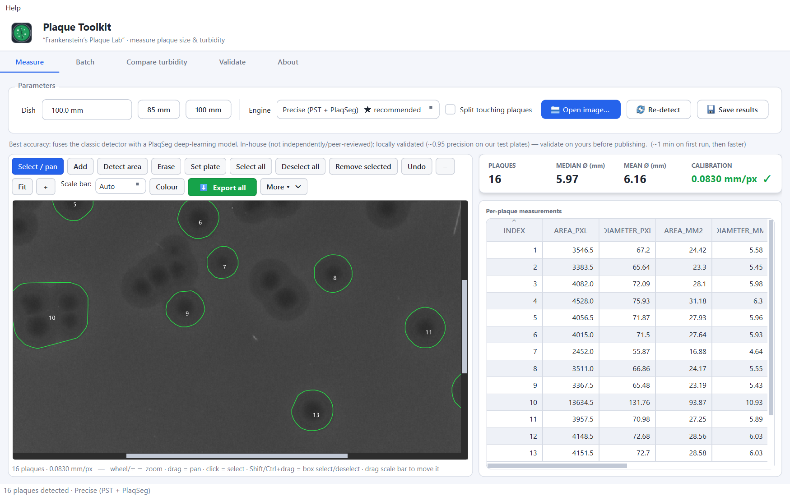
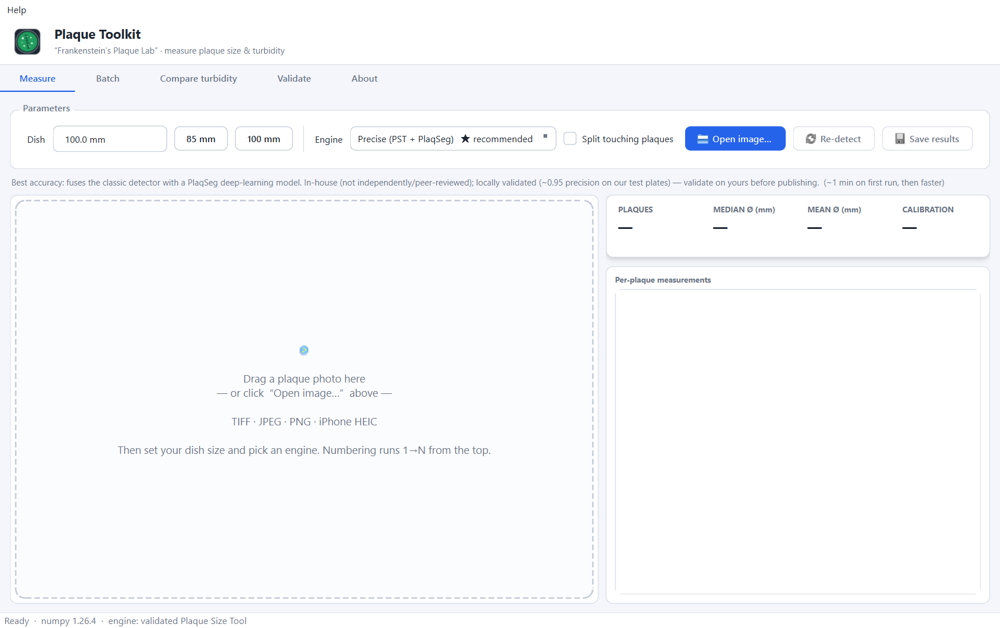
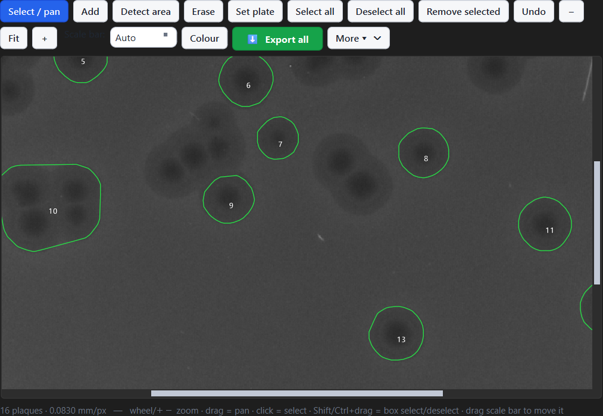
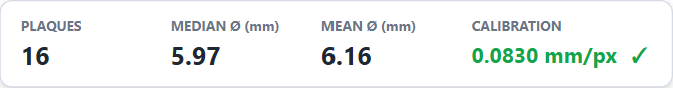
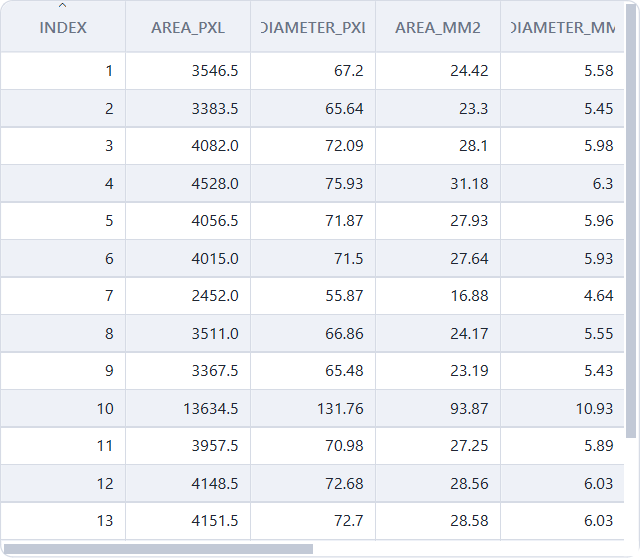
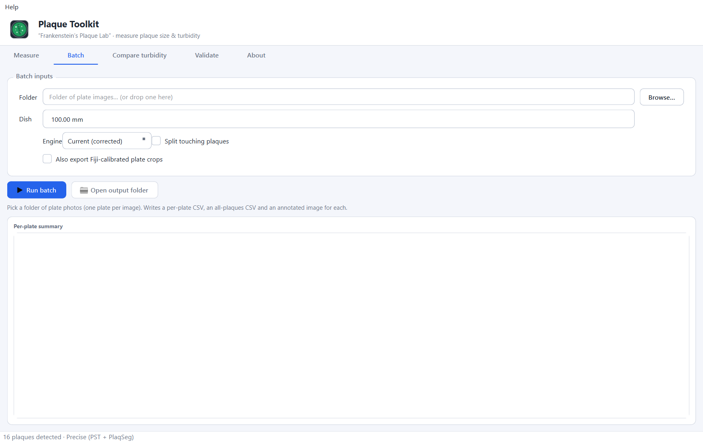
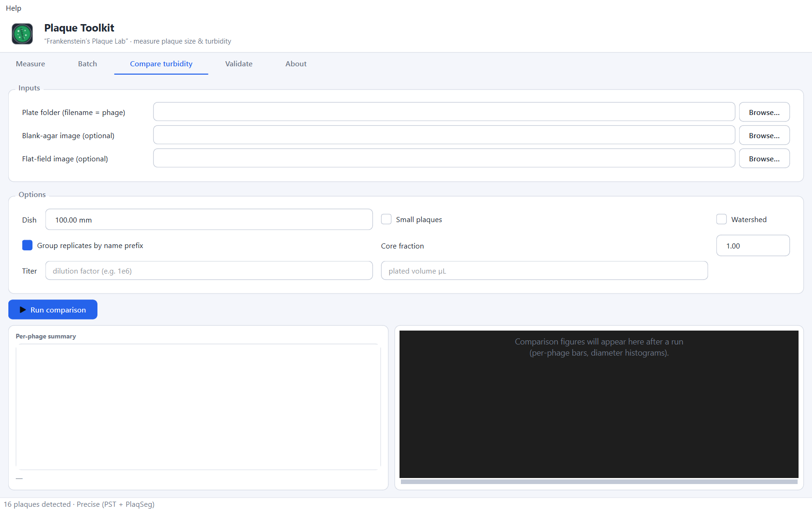
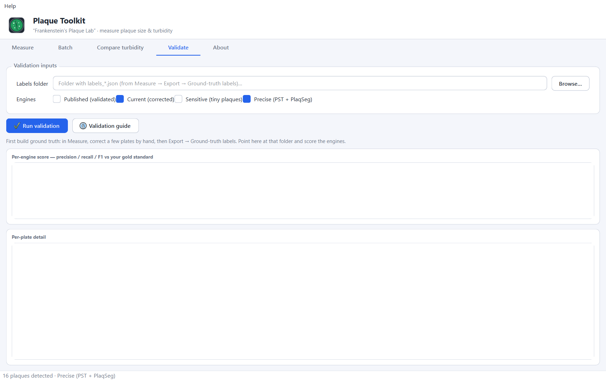

Tool Atlas
Plaque Toolkit — nicknamed “Frankenstein’s Plaque Lab”. A complete, screenshot‑by‑screenshot reference to every tab, button, and number in the app.
Measure bacteriophage plaque size & turbidity from Petri‑dish photos · Windows & macOS · built on the peer‑reviewed Plaque Size Tool (Trofimova & Jaschke, 2021).
What it is
One window that takes a photo of a plaque plate and gives you the size (area & diameter in mm), count, turbidity (clarity), and titer — with an editor to correct detections by hand and exports ready for a figure or a spreadsheet.
It “stitches several tools into one”: the validated PST detector, a PlaqSeg deep‑learning model, an optional classifier, a manual‑correction editor, and millimetre calibration. You pick a detection engine, open an image, fix anything the detector got wrong, and export.
The 60‑second workflow
- Open an image — click
Open image…or drag a photo onto the window (TIFF/JPEG/PNG/iPhone HEIC). - Set the dish size — type your agar diameter in Dish (or tap 85/100). Numbers re‑scale live.
- Pick an engine — Precise for best detection, Published for citable numbers.
- Review in the editor — erase false positives, add missed plaques.
- Export all — one click writes the CSV + annotated figure to an
out/folder and opens it.
Window layout
Five tabs across the top: Measure (one plate at a time), Batch (a whole folder), Compare turbidity (cross‑phage OD), Validate (score engines vs your labels), and About (a built‑in reference). The Help menu (top‑left) opens the guides. A status bar at the very bottom shows the engine and progress.

Measure · the Parameters row
| Control | What it does |
|---|---|
| Dish (mm) | The real diameter of the circle the tool traces, used to convert pixels→mm.
Changing it re‑scales the current image instantly (see Calibration).
Set to 0 to report pixels only. |
| 85 / 100 buttons | Quick‑pick shortcuts for the Dish value. 85 mm ≈ a common agar base; 100 mm = the nominal lid. They just set the Dish box (which then re‑scales live) — you can type any value instead. |
| Engine | The detection algorithm (Published / Current / Sensitive / Precise). The ★‑marked one is the recommended default. The grey line under the row explains the selected engine. |
| Split touching plaques | Watershed segmentation to separate plaques whose edges touch. Helpful on crowded plates; ignored under Published. |
| Open image… | Choose a photo. You can also drag‑and‑drop one anywhere on the tab. (Ctrl+O) |
| Re‑detect | Re‑run detection on the current image with the options above (replaces current detections). |
| Save results | Write the table + overlay + turbidity to an out/ folder next to the image. (Ctrl+S) |
Opening an image (and drag‑and‑drop)
Before anything is loaded you get a friendly drop zone. Drag a photo anywhere onto the window — even after a plate is already loaded, dropping a new image replaces it. On the Batch tab, drag a folder to set it.

The editor & its tools
Once a plate is open, the left panel becomes an interactive editor. Green outlines are detected plaques, each with a white number. The toolbar holds every editing tool.

| Tool | What it does |
|---|---|
| Select / pan | Click a plaque to select it (turns red); drag to pan; Shift/Ctrl+drag to box‑select/deselect. |
| Add | Click a plaque to auto‑trace its real outline, or drag to draw a circle. (See below — this is why some manual plaques aren’t circles.) |
| Detect area | Rubber‑band a rectangle to re‑scan just that region (good for a patch the detector missed). |
| Erase | Click a plaque to remove it. Right‑click erases in any tool. |
| Set plate | Click 3 points on the real agar rim, then type its diameter (mm) → recalibrates the scale. (See Calibration.) |
| Select all / Deselect all / Remove selected | Bulk selection, and delete everything selected (Delete). |
| Undo | Step back through edits (u). |
| – / Fit / + | Zoom out / fit to window (0) / zoom in. The mouse wheel also zooms at the cursor. |
| Scale bar + Colour | Pick a bar length (Auto or fixed mm) and colour; drag the bar on the image to reposition it. |
| ⬇ Export all | One click → CSV + annotated figure to out/, then opens the folder. |
| More ▾ | Individual exports (see Exporting). |
Adding plaques — why some aren’t circles
With the Add tool, how you add decides the shape:
| Gesture | Result | Shape |
|---|---|---|
| Click (tap, no drag) | Auto‑traces the plaque’s real outline | A contour that follows the true edge — often not circular |
| Drag outward | Draws a circle of that radius | A perfect circle |
d = 2·√(area/π). A traced blob and a drawn circle both collapse to one
clean diameter. Auto‑detected plaques are traced outlines too, so a clicked add just matches them.Want them all circular? Drag small circles instead of clicking. Want the true shape/area? Click to auto‑trace. Both measure identically.
The summary card

- PLAQUES — current count (after your edits).
- MEDIAN Ø / MEAN Ø (mm) — the middle and average area‑equivalent diameter.
- CALIBRATION — the scale. 0.0830 mm/px ✓ in green = calibrated; Not set in amber = pixels only (set a Dish size or use Set plate).
The results table

| Column | Meaning |
|---|---|
INDEX | Plaque number — 1 is the topmost plaque, counting down. |
AREA_PXL | Area in pixels (convex hull, halo‑inclusive). |
DIAMETER_PXL | Area‑equivalent diameter in pixels: 2·√(area/π). |
AREA_MM2 / DIAMETER_MM | The same in mm (need calibration; blank if pixels‑only). |
MEAN_GRAY | Mean brightness inside the plaque (0–255). Lower = clearer/darker. |
TURBIDITY_REL | Plaque brightness ÷ surrounding lawn. ~1 = as opaque as the lawn (turbid); lower = clearer. (See Turbidity.) |
SOURCE | How it was found: auto (detector), manual (you added it), watershed (split from a touching pair). |
Numbering — 1→N from the top
Plaques are numbered top‑to‑bottom (then left‑to‑right): #1 is the highest plaque in the image, and the
numbers march downward. The on‑image labels, the table INDEX, the CSV, the annotated figure, and the
exported labels all use this same order, and it re‑sorts automatically whenever you add or erase a plaque. Selecting a
plaque never changes its number.
Calibration — getting millimetres right
All the mm numbers come from one scale: mm per pixel = dish_mm ÷ dish_pixels. Getting the dish size
right is the single most important thing for accurate sizes.
Three ways to set the scale
- Dish box (live). Type your agar diameter (or tap 85/100). Every mm value + the calibration re‑scale instantly — no re‑detection. Use the up/down arrows to nudge and watch the numbers move.
- Set plate tool. Click 3 points on the real agar rim → the app fits that circle → type its mm diameter. Best when the auto‑detected boundary isn’t the agar edge.
- In‑frame ruler (gold standard). Lay a ruler in the plane of the agar and read the scale directly; use it as a one‑time check of the dish method.
Detection engines
Pick the engine in the Measure dropdown. Only one is citable.
| Engine | What it is | Validation | Use for |
|---|---|---|---|
| Published citable | The exact Trofimova & Jaschke 2021 algorithm, unchanged. | Peer‑reviewed & validated — the only citable mode. | Numbers that go in a paper. |
| Current | Same algorithm + bug‑fixes + better dish calibration. | In‑house; differs from Published only slightly. | Routine day‑to‑day measuring (fast default). |
| Sensitive noisy | Current with the size gates lowered to catch tiny plaques. | In‑house, not validated — more false positives. | Finding sub‑0.4 mm plaques; exploratory. |
| Precise best detection | Fuses PST with a PlaqSeg deep‑learning model (+ optional classifier). | In‑house (not independently/peer‑reviewed); locally validated (~0.95 precision on our test plates). ~1 min on first run. | The best detector on dense plates. |
Exporting
The green ⬇ Export all button is the one‑click path: it writes the CSV table + the annotated figure
to an out/ folder next to your image and opens that folder. The More ▾ button beside it has the
individual options:
| Export | What you get |
|---|---|
| Data table (CSV) | One row per plaque — every column from the results table. |
| Annotated figure (PNG) | The plate with green outlines, the white numbers, and the scale bar, exactly as shown. |
| Input vs annotated | Side‑by‑side original/annotated image — great for QC and slides. |
| Original input image | The decoded source (HEIC saved as PNG). |
| Cropped plate for Fiji | A TIFF with the mm scale baked in — Fiji/ImageJ opens it already calibrated, so cropping a plaque keeps the scale. Plus a .fiji.txt sidecar. |
| Ground‑truth labels | A reusable labels_*.json of your verified plaque set — feed it to the Validate tab. |
Batch — a whole folder at once

Writes, into an output folder: per_plate.csv (count, median/mean diameter, calibration, tilt flag per
plate), all_plaques.csv (every plaque across the set), and an annotated image per plate. Tick
“Also export Fiji‑calibrated plate crops” to get a calibrated TIFF per image too. Current is the sensible
engine here — Precise over a whole folder is very slow.
Compare turbidity — across phages

Give it a folder of phage plates (optionally a blank/flat‑field for the light reference) and it computes apparent optical density, a clarity class, titer (PFU/mL) from dilution/volume, per‑phage statistics and box/histogram figures. See Turbidity explained for what the numbers mean and their limits.
Validate — score the engines on your plates

labels_*.json ground‑truth files to score each engine.This is how you turn “Precise looks good” into a defensible number. Correct a few plates by hand in the editor, Export → Ground‑truth labels, then point the Validate tab at that folder. It reports, per engine, precision / recall / F1 and per‑plaque size agreement — the exact figures to put in your Methods.
Turbidity explained
Turbidity is a plaque’s clarity — a real, publishable phenotype: clear plaques ≈ fully lytic phage; turbid/cloudy plaques ≈ temperate (lysogeny) or resistant regrowth inside the plaque. It’s reported two ways:
- Per plaque (Measure tab):
MEAN_GRAYandTURBIDITY_REL(plaque ÷ lawn). - Across phages (Compare tab): apparent OD, clarity class, titer, stats, figures.
Publishing checklist
- Image straight‑on (dish circular, not elliptical); fixed lighting.
- Calibrate to the agar diameter (or a ruler); state the value.
- Use Published for citable numbers, or use Precise and report your own validation (Validate tab: P/R/F1 + size agreement + a negative control).
- State that “size” = convex‑hull area‑equivalent diameter (halo‑inclusive, a slight upper bound).
- Treat the plate (not the plaque) as the replicate; aggregate to per‑plate means; ≥ 3 plates/condition.
Full templates: docs/METHODS_TEMPLATE.md, docs/PUBLICATION.md, docs/VALIDATION_GUIDE.md
(also in the Help menu).
Keyboard shortcuts
| Key | Action |
|---|---|
| Ctrl+O | Open image |
| Ctrl+S | Save results |
| mouse wheel · + / − | Zoom (at cursor) |
| 0 | Fit image to window |
| drag | Pan · (in Add) draw a circle |
| click | Select a plaque · (in Add) auto‑trace · (in Erase) remove |
| right‑click | Erase a plaque (any tool) |
| Shift/Ctrl+drag | Box select / deselect |
| Delete | Remove selected |
| u | Undo |
FAQ / troubleshooting
Why are some manual plaques not circles?
Because you clicked (auto‑trace) rather than dragged (draw circle). Both measure the same way (area → equivalent diameter). See Adding plaques.
The mm columns are blank / say “Not set”.
No scale yet. Set a Dish size (or use Set plate). With Dish = 0 you get pixels only.
I changed the dish size and nothing happened.
Changing the dish live‑re‑scales only when a dish was detected. If the boundary wasn’t found, use Set plate to define it, then the numbers follow.
Precise is slow / says unavailable.
Precise loads a deep‑learning model — the first run takes ~1 min, then it’s quick. If it’s unavailable, that machine lacks the model/torch; use Current or Published.
A “tilted dish” warning appears.
The plate was shot at an angle so the dish looks elliptical, which biases the mm scale. Re‑shoot straight‑on.
Does it read iPhone photos?
Yes — HEIC/HEIF decode automatically (and EXIF rotation is honoured).
The app is unsigned (SmartScreen / Gatekeeper warning).
Normal for indie scientific tools. Windows: More info → Run anyway. macOS: right‑click → Open → Open.
Plaque Toolkit · “Frankenstein’s Plaque Lab” · built on the peer‑reviewed Plaque Size Tool (Trofimova & Jaschke, Virology 2021). The Sensitive/Precise modes and PlaqSeg are in‑house and not independently validated — verify by eye and validate on your own plates before reporting.